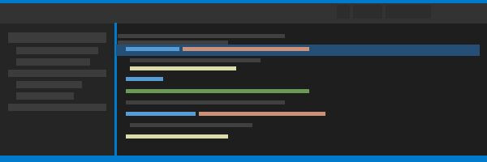

Artificial Intelligence
AI Code Assistants in 2025: A Comprehensive Review
We tested the top AI coding assistants across real-world projects to see which ones actually boost productivity and which are just hype.